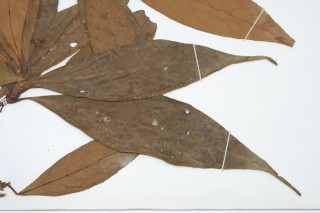
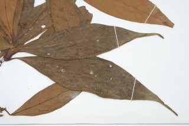

Trees up to 8 m tall.
8 ಮೀ.ವರೆವಿಗೆ ಬೆಳೆಯುವ ಮರಗಳು.
8 മീറ്റര് വരെ ഉയരമുളള മരങ്ങള്.
மரங்கள் 8 மீ. உயரம் வரை வளரக்கூடியது
Branchlets terete, glabrous.
ಕಿರುಕೊಂಬೆಗಳು ದುಂಡಾಗಿದ್ದು ರೋಮರಹಿತವಾಗಿರುತ್ತವೆ.
അരോമിലമായ, ഉരുണ്ട ഉപശാഖകള്.
சிறுநுனிக்கிளைகள் குறுக்குவெட்டுத் தோற்றத்தில் வளையமானது, உரோமங்களற்றது.
Leaves simple, alternate, spiral, clustered at twig ends; petiole 0.3-2 cm long; lamina 7.5-20 x 1.7-6.5 cm, narrow elliptic-lanceolate, apex acuminate to caudate, base narrowly attenuate, glabrous, glaucous beneath; midrib slightly raised above; secondary_nerves 9-13 pairs, slender; tertiary_nerves reticulo-percurrent.
ಎಲೆಗಳು ಸರಳವಾಗಿದ್ದು ಪರ್ಯಾಯ ಮತ್ತು ಸುತ್ತು ಜೋಡನಾ ವ್ಯವಸ್ಥೆಯಲ್ಲಿ ಇದ್ದು ಕುಡಿಕೊಂಬೆಗಳ ತುದಿಯಲ್ಲಿ ಗುಂಪಾಗಿರುತ್ತವೆ;ತೊಟ್ಟುಗಳು 0.3 - 2 ಸೆಂ.ಮೀ. ಉದ್ದ ಹೊಂದಿರುತ್ತವೆ;ಪತ್ರಗಳು 7- 20.3 X1.7 – 6.5 ಸೆಂ.ಮೀ.ವರೆಗಿನ ಗಾತ್ರ ಹೊಂದಿದ್ದು ಸಂಕುಚಿತ ಅಂಡವೃತ್ತ – ಭರ್ಜಿಯ ಆಕಾರ ಹೊಂದಿರುತ್ತವೆ; ತುದಿ ಕ್ರಮೇಣ ಚೂಪಾದುದರಿಂದ ಬಾಲರೂಪಿ ಮಾದರಿವರೆಗಿನ ಆಕಾರದಲ್ಲಿರುತ್ತದೆ ಮತ್ತುಎಲೆಯ ಬುಡ ಸಂಕುಚಿತವಾಗಿ ಒಳಬಾಗುವ ರೀತಿಯದಾಗಿರುತ್ತದೆ;ಪತ್ರಗಳು ರೋಮರಹಿತವಾಗಿರುತ್ತವೆ ಮತ್ತು ಮಾಸಿದ ಬೂದು ಹಸಿರು ಬಣ್ಣದ ತಳಭಾಗವನ್ನು ಹೊಂದಿರುತ್ತದೆ; ಮಧ್ಯನಾಳ ಪತ್ರದ ಮೇಲ್ಭಾಗದಲ್ಲಿ ಸ್ವಲ್ಪ ಉಬ್ಬಿರುತ್ತದೆ; ಎರಡನೇ ದರ್ಜೆಯ ನಾಳಗಳು 9-13 ಜೋಡಿಗಳಿರುತ್ತವೆ ಮತ್ತು ತೆಳುವಾಗಿರುತ್ತವೆ;ಮೂರನೇ ದರ್ಜೆಯ ನಾಳಗಳು ಎಲೆ ದಿಂಡಿಗೆ ಅಡ್ಡವಾಗಿ ಕೂಡುತ್ತವೆ ಮತ್ತು ಜಾಲಬಂಧ ನಾಳ ವಿನ್ಯಾಸ ಹೊಂದಿರುತ್ತವೆ .
ലഘുവായ ഇലകള്, ഏകാന്തരക്രമത്തില്, സര്പ്പിളമായി, തണ്ടുകളുടെ അറ്റത്ത് കൂട്ടമായടുക്കിയ വിധത്തിലാണ്; ഇലഞെട്ടിന് 0.3 സെ.മീ തൊട്ട് 2 സെ.മീ വരെ നീളം; പത്രഫലകത്തിന് 7.5 സെ.മീ തൊട്ട് 20 സെ.മീ വരെ നീളവും 1.7 സെ.മീ തൊട്ട് 6.5 സെ.മീ വരെ വീതിയും, വീതികുറഞ്ഞ ദീര്ഘവൃത്തീയ-കുന്താകൃതിയുമാണ്, പത്രാഗ്രം ദീര്ഘം തൊട്ട് വാലുളളതുവരെയാണ്, പത്രാധാരം വീതികുറഞ്ഞ് നേര്ത്തവസാനിക്കുന്നതാണ്, അരോമിലം, കീഴെ നീലരാശി കലര്ന്നതാണ്; മുഖ്യസിര മുകളില് അല്പ്പം ഉയര്ന്നതാണ്; 9 മുതല് 13 വരെ ജോഡി, നേര്ത്ത, ദ്വിതീയ ഞരമ്പുകള്; ജാലിത പെര്കറന്റ് വിധത്തിലുളള ത്രിതീയ ഞരമ്പുകള്.
இலைகள் தனித்தவை, மாற்றுஅடுக்கமானவை, சுழல் போன்று அமைந்தவை, தண்டின் நுனியில் கூட்டமாக மற்றும் நெருக்கமாக அமைந்தவை; இலைக்காம்பு 0.3-2 செ.மீ. நீளமானது; இலை அலகு 7.5-20 X 1.7-6.5 செ.மீ., குறுகிய நீள்வட்டம்-ஈட்டி வடிவானது, அலகின் நுனி அதிக்கூரியது முதல் வால் போன்றது, அலகின் தளம் குறுகியது மற்றும் அட்டனுவேட், அலகின் கீழ்பரப்பு உரோமங்களற்றது மற்றும் மெழுகு பூசியது போன்றது அல்லது சாம்பல் கலந்த நீல நிறமானது (க்களாக்கஸ்); மையநரம்பு மேற்பரப்பில் அலகின் மேற்பரப்பைவிட உயர்ந்தது; இரண்டாம் நிலை நரம்புகள் 9-13 ஜோடிகள், மெல்லியவை; மூன்றாம் நிலை நரம்புகள் வலைப்பின்னல் பெர்க்கரண்ட்.
Inflorescence axillary or subterminal slender panicles, to 10 cm long; usually bisexual or rarely polygamous; perianth yellow; anthers 4 celled.
ಪುಷ್ಪಮಂಜರಿ ಅಕ್ಷಾಕಂಕುಳಿನಲ್ಲಿರುವ ಅಥವಾ ಉಪ-ತುದಿಯಲ್ಲಿನ ತೆಳುವಾಗಿರುವ ಪುನರಾವೃತ್ತಿಯಾಗಿ ಕವಲೊಡೆಯುವ ಮಾದರಿಯಲ್ಲಿರುತ್ತವೆ ಮತ್ತು 10 ಸೆಂಮೀ. ವರೆಗಿನ ಉದ್ದ ಹೊಂದಿರುತ್ತವೆ;ಹೂಗಳು ಸಾಮಾನ್ಯವಾಗಿ ದ್ವಿಲಿಂಗಿಗಳು ಅಥವಾ ಸಂಕೀರ್ಣ ಲಿಂಗಿಗಳಾಗಿರುತ್ತವೆ;ಪುಷ್ಪಾವರಣ ಹಳದಿ ಬಣ್ಣದಲ್ಲಿರುತ್ತವೆ;ಪರಾಗಾಶಯಗಳು 4 ಕೋಶವನ್ನೊಳಗೊಂಡಿರುತ್ತವೆ.
4 അറകളുളള കേസരങ്ങളുളളതും, കുര്ത്ത പരിദളമുളളതുമായ, സാധാരണയായി ദ്വിലിംഗികളും അപൂര്വ്വമായി ബഹുലിംഗികളുമായ പൂക്കള്, 10 സെ.മീ വരെ നീളമുളള കക്ഷീയമോ ഉപഉച്ഛസ്ഥമോ ആയ നേര്ത്ത പാനിക്കിള് പൂങ്കുലകളാണ്.
மஞ்சரி இலைக்கோணங்களில் அல்லது கிட்டதட்ட தண்டின் நுனியில் அமைந்த மெல்லிய பேனிக்கிள், 10 செ.மீ. நீளமானது; பொதுவாக இருபாலானவை அல்லது அரிதாக மலர்கள் ஒர்பாலானவை மற்றும் இருபாலானவை கலந்தவைகள் பாலிகேமஸ்); ப்பீரியான்ந்த் மஞ்சள் நிறமானவை; மகரந்த பை 4 அறைகளுடையது.
Berry, ellipsoid, black, 1.3 cm long; seed 1.
ಬೆರ್ರಿ ಅಂಡವೃತ್ತದಾಕಾರದಲ್ಲಿದ್ದು ಕಪ್ಪು ಬಣ್ಣ ಹೊಂದಿರುತ್ತದೆ;ಬೀಜ 1.
ഒറ്റ വിത്തുളള കായ, 1.3 സെ.മീ നീളമുളള, കറുത്ത ദീര്ഘഗോളാകാര ബെറിയാണ്.
முழுச்சதைகனி (பெர்ரி), நீள்வட்ட வடிவானது, கருப்பு நிறமானது, 1.3 செ.மீ. நீளமானது; விதை ஒன்றுடையது.
 
